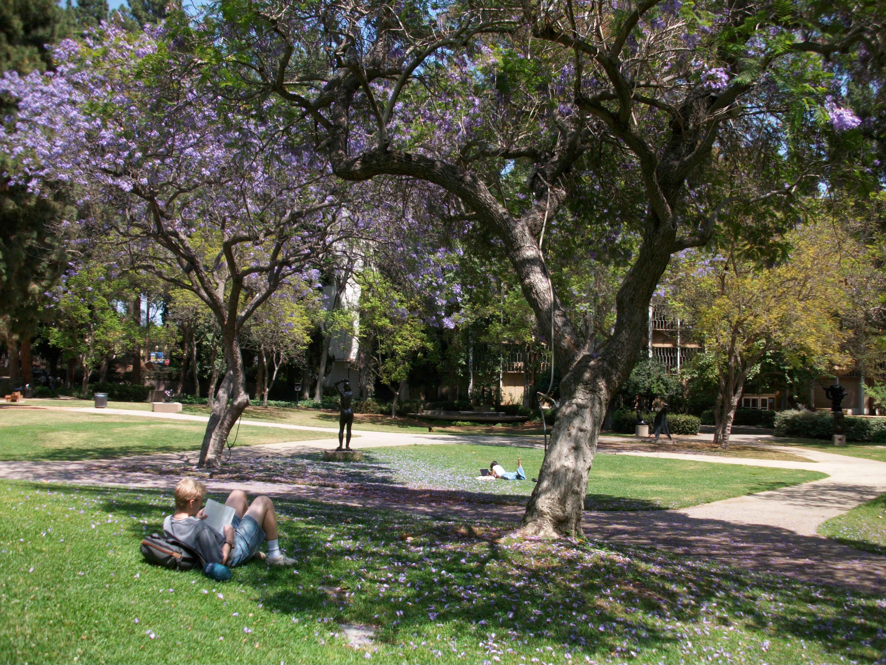
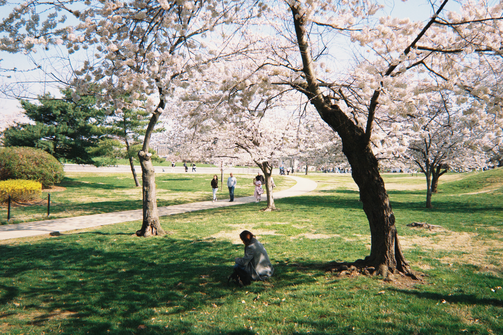
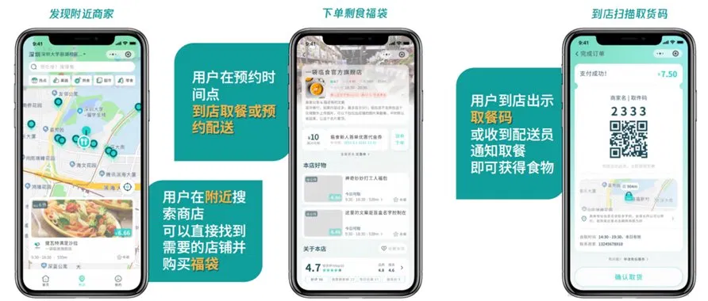
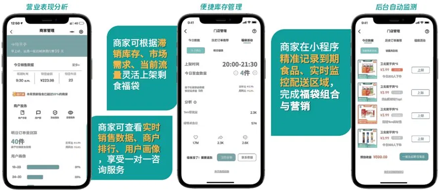
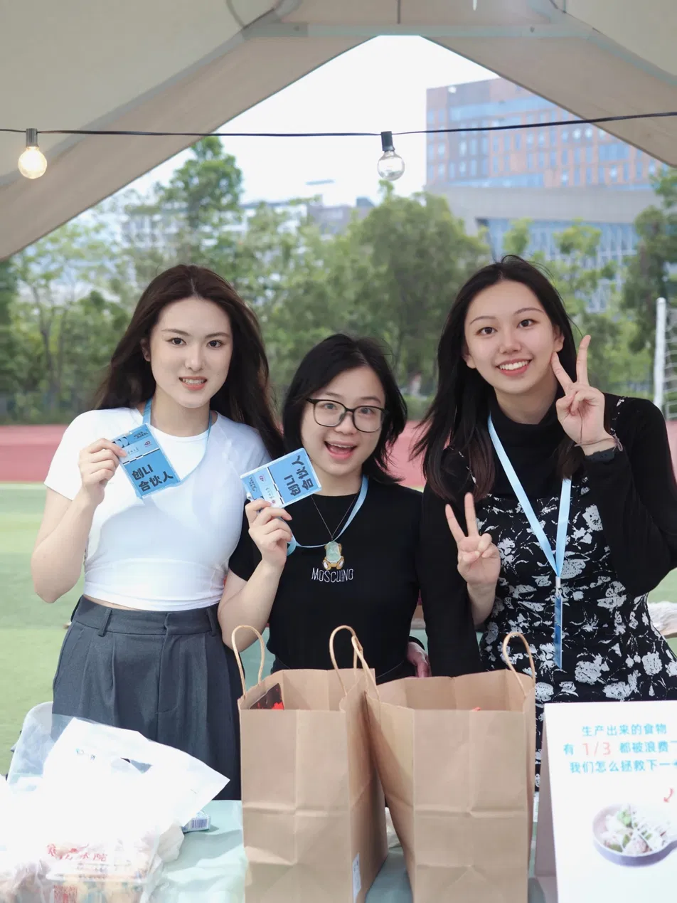
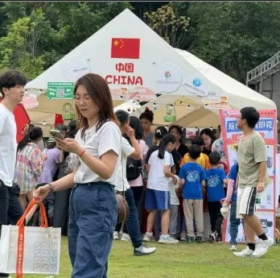
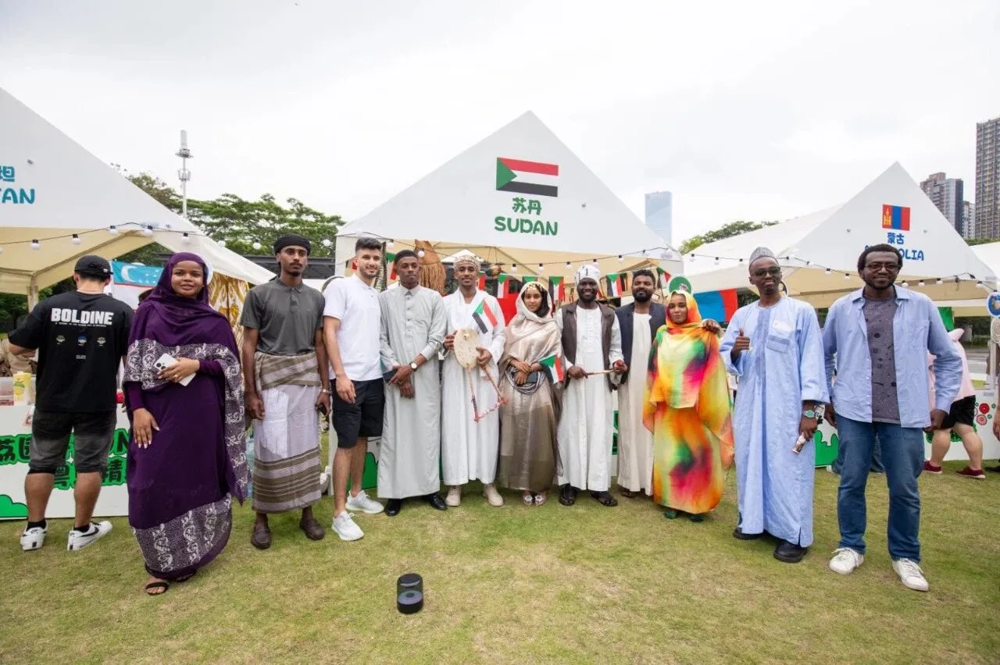

Beyond Work
Photography & Visual
Photography is how I stay observant — the same instinct that makes a good insight makes a good photograph.



← DRAG TO SCROLL →
Analyst with a creative instinct. I translate complex datasets into strategy — and turn insights into decisions that move the business forward.
I sit at the intersection of analytics and creativity — the kind of analyst who reads data tables and writes creative strategy in the same afternoon.
My background spans conversion funnel analysis, customer segmentation, statistical modeling, and growth strategy. I've worked with datasets of 500K+ users, built clinical analytics dashboards in R Shiny, and developed full creative strategies for AI products.
I'm drawn to roles where insight drives direction — where the question isn't just "what does the data say" but "what should we do about it."
Full creative strategy for an AI voice-notes app · Meta + TikTok · 2025
↓ Download Full Case Study PDFLoopNote needed a paid social strategy to drive paid trial starts below $90 target CPA on Meta and TikTok — in a crowded market dominated by Otter.ai, Fathom, and Granola.
Mapped 5 competitors and 8 real benchmark creatives. Analyzed performance data from 10 past concepts to find the best-performing format ($62 CPA). Developed a creative brief, 3 original concepts, and a $9,000 two-week test plan.
"Every competitor lives inside the meeting room. Nobody owns the shower idea, the run thought, the 2am voice memo. That uncontested emotional territory became the entire campaign direction."
Academic Project · Jan – Apr 2026 · University of California, Los Angeles
↗ Launch Interactive Dashboard ↗ View Full Code on GitHubInvestigate hemodynamic outcome variability in ICU patients using the MIMIC-IV clinical database. Identify significant predictors of MAP trends and ICU outcomes to support clinical decision-making.
Extracted and queried 50,000+ ICU patient records via SQL. Applied logistic regression and mixed-effects models. Built an interactive R Shiny dashboard with ggplot2 visualizations for dynamic exploration by clinical stakeholders.
"Identified three significant predictor variables for ICU outcome variability. The R Shiny dashboard translated 50K+ raw clinical records into a tool stakeholders could actually use — the same translation challenge I apply to business data."
Marketing Data Analyst Intern · Apr – Sep 2024 · Shenzhen, China
The marketing team spent 15+ hours per week on manual reporting with no systematic way to identify high-value customer segments or diagnose where leads dropped out of the acquisition funnel.
Built customer segmentation models on 500K+ user records using Python and SQL. Designed automated KPI dashboards in Tableau. Conducted A/B testing and multi-step funnel analysis — leading to a 40% lift in conversion rate.
"The top 8% of users drove 47% of total revenue — but had never been separately targeted in campaign strategy. Segmentation unlocked a completely different acquisition approach."
Project Leader · Sep 2022 – Dec 2023 · Shenzhen, China
Contributed to the app's user flow design and interface layout. UI decisions were directly informed by market research feedback on how students preferred to discover and purchase surplus food.
Designed and executed mixed-method research (N=200+ surveys, stakeholder interviews) to assess demand and competitive landscape. Ran campus brand events and led merchant partnership outreach.
"University campuses were the highest-density, highest-frequency target — students eat 3 meals a day on campus, making them the ideal first market for testing both demand and merchant viability simultaneously."



App UI — user & merchant views · Campus marketing event, Shenzhen University (Hazel, rightmost).


Photography is how I stay observant — the same instinct that makes a good insight makes a good photograph.


Open to roles in marketing analytics, business analysis, growth strategy, and any work that lives at the intersection of data and creative thinking.